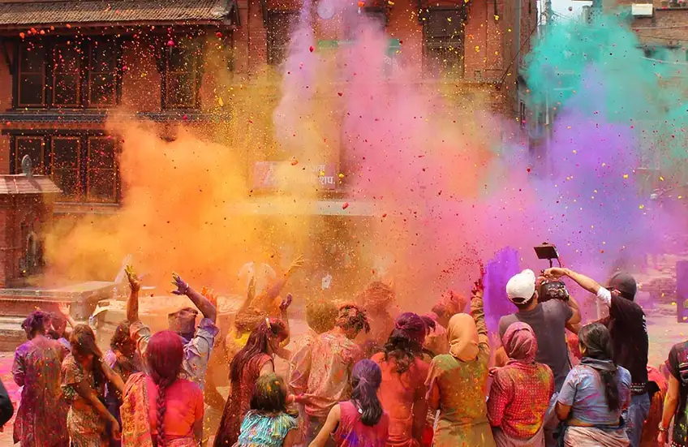

Undoubtedly, Diwali or Deepavali is the most spectacular festival celebrated in the Indian subcontinent. Autumn heralds in this Hindu festival of lights that is celebrated across the length and breadth of the country. The celebrations are marked by people decorating their homes with candles, earthen lamps, and lights, bursting crackers, and exchanging gifts and sweets with friends and family. Since it is celebrated on a new moon night, these sparkling lamps and lights add a magical feel to the whole scenario. A festival that commemorates Lord Rama’s return with his wife after 14 years of exile and his triumph over Ravana, Diwali symbolizes the ultimate victory of good over evil. During this festival you can visit Rama’s janma bhoomi which is Ram Mandir in Ayodhya.
Holi is another noteworthy name in the list of festivals of India. Considered the festival of love and the festival of colors, it signifies the arrival of spring and the victory of good over evil. It is celebrated all over the country with a lot of enthusiasm and fervor. Typically, the celebrations start on the eve of the festival. Huge bonfires are lit (symbolizing the burning of the mythical demoness Holika), and people sing and dance around this crackling fire. On the day of the Holi festival, they put dry and wet colors of various hues on each other. Playing with water guns and balloons filled with colored water, and drinking bang thandai (a desi cocktail made with Indian spices) are some of the key attractions of Holi.
